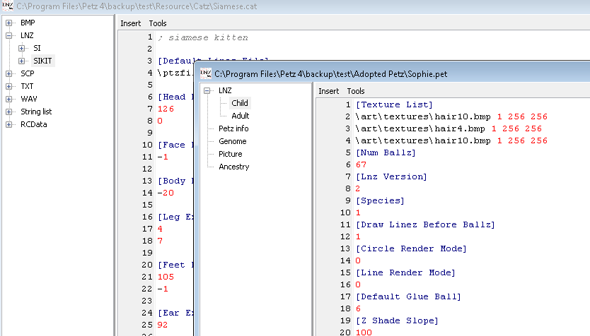
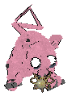

Go back
What would your reaction be if I told you that you can kill your petz? Probably something like this?
Well, you can! And today I will show you how it's done!
I will begin this demonstration by picking out our test subject. We will name this cute little girl Sophie.

Aww, isn't she adorable? Now it's time to open LNZ Pro. To zombify your pet, you will need to paste in the breed LNZ from (almost) any breed.

This will not work with the LNZ from any pet. It mostly only works with the vanilla cat breeds. (I still need to go figure out what exactly in the LNZ causes this so I can make it work with more breeds.)
After copying the LNZ over from the breed you just save your pet, and TAA DAA:
Congrats! You zombified a poor innocent animal!
Characteristics of a Zombie Pet
The vast majority of zombified petz will continuously walk towards the horizon or edges of the window until you stop them.
They sometimes interact with toys and treats, but seem to just prefer wandering mindlessly.
They don't seem to interact much with other petz at all, all of their interaction seems to consist of getting attacked by other petz.
Some zombie pets, Sasa here for example, enjoy standing and doing absolutely nothing for long periods of time.
They will occasionally play licking or scratching animations, but ultimately sit there doing nothing.
ALL zombie petz are completely incapable of blinking or moving their eyes. Almost all petz, excluding ones with Chinchilla Persian LNZ, occasionally lose their irises.

Enjoy these images of petz irises clipping and leaving the eyeball!


Putting Clothing on a zombie pet is very interesting. Any ball-coloring clothes (like shirts or socks) do not appear.
All glasses or hats will appear on their back left leg. I really like putting bows on their legs.


Also removing clothing from the the petz causes them to fall apart until you put the clothes back or put them in the carrying case then take them back out.


Special Infected
WARNING: LuckyCat crashes the game and Tab is almost impossible to grab. Play with them at your own risk.
This is LuckyCat. He is a dog whom I gave siamese LNZ. I don't know what went so wrong with this poor thing.
He usually crashes the game within seconds of bringing him out, but I managed to get the game to run long enough for me to snap these wonderful photos of him.


The pic below is Tab. She's insane. She rapidly teleports haphazardly around the set, pushing items around with her magically elongating whiskers. It's difficult to get a picture of her.
This is what she looks like seconds after coming out of the carrier, before she begins to blast around out of control.

You can download LuckyCat and Tab to play or experiment with on your own :)